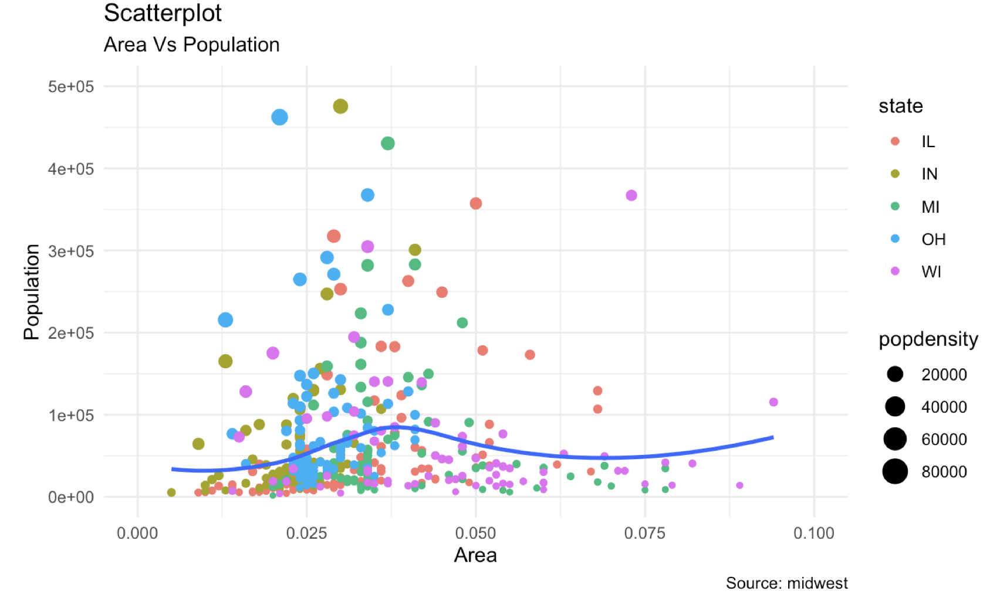
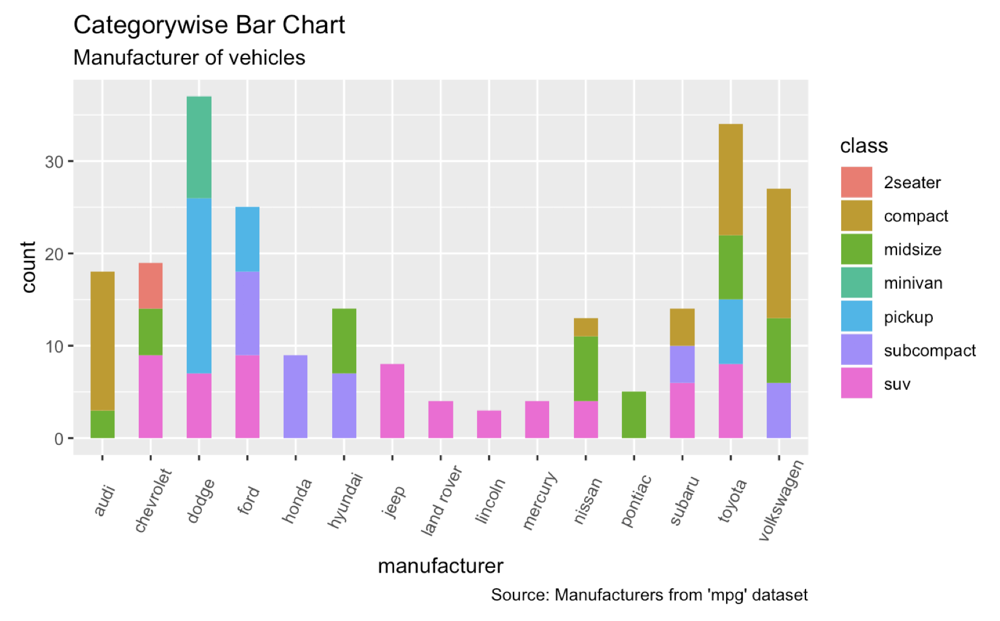

Chapter 4 Exercise
- Exercise 1:
midwestis a dataset inggplot2, and contains demographic information of midwest counties. Replicate the following scatterplot as close as you can. The variable for the x-axis, y-axis, color aesthetic, size aesthetic arearea,poptotal,state, andpopdensity.

- Excercise 2: Replicate the following barplot using the
mpgdataset. Usetheme(axis.text.x = element_text(angle=65, vjust=0.6)). Check why we need this theme by plotting with and without this theme. You also needwidth = 0.5option in a geom to have more space between bar.
